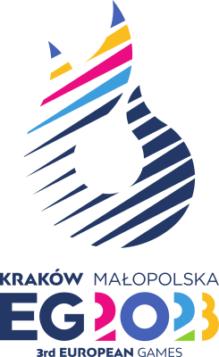

Hi there! I'm Lakshita, a high school senior in Kraków, Poland. I strive to improve teen mental health uisng my knowledge about clinical psychology.
Activities
FounderWhere Emotions Flow  style="float: right; font-size:12px;"> July 2024—Present
style="float: right; font-size:12px;"> July 2024—Present
Where Emotions Flow is a mental health organization that aims to raise awareness & understanding of emotional dysregulation in teenagers. We have published 250+ research papers on our website, and established to over 15 chapters internationally.
Model UN Club Memberat Cracow International School (CIS) style="float: right; font-size:12px;"> March 2024—Present
Contacted 3 schools to boost workshop attendance and collaborated with 4 MUN conferences to promote our club. Was 1/250 delegates at 2024 EmbassyMUN conference.
Event Assistant3rd European Games Kraków-Małopolska 2023  style="float: right; font-size:12px;"> June 2023—July 2023
Chosen from 9620 applicants. Provided info and support to event participants, assisted with crowd movement, and helped attendees find venue entrances.
Beta TesterKnowunity style="float: right; font-size:12px;"> February 2023—July 2023
Provided detailed feedback on UX design, identified 30 issues, and suggested solutions that improved the platform's functionality and user experience.
SurveyorNational Museum in Krakow  style="float: right; font-size:12px;"> July 2022—August 2022
style="float: right; font-size:12px;"> July 2022—August 2022
Surveyed 54 visitors at the XX + XXI Century Gallery of Polish Art. Found a preference for newsletter updates; now nearly 3000 people have subscribed since March 2024.
Awards & Certifcates
Małopolski Konkurs Języka Angielskiego, FinalistKuratorium Oświaty w Krakowie style="float: right; font-size:12px;"> March 2021
Distinction in Linguistic ExcellenceCracow International School  style="float: right; font-size:12px;"> June 2023
style="float: right; font-size:12px;"> June 2023
This award was given out at the end of the school year to students, selected specifically by the English teacher, who demonstrated exceptional commitment to personal linguistic and communicative development. I was one of the 5 students chosen to receive this award by my English teacher in the subject.
Certificate in Fundamentals of Digital MarketingGoogle
style="float: right; font-size:12px;"> July 2023
Throughout the certification training, I gained comprehensive insights into core digital marketing strategies, including SEO, SEM, social media marketing, content strategy, analytics, and online advertising. The course, developed by Google, provided hands-on experience with industry-leading tools and techniques, emphasizing data-driven decision-making and consumer engagement. Additionally, I explored emerging trends in digital marketing and their impact on business growth in an increasingly digital world.
Copyright © 2025 Lakshita Arora. All rights reserved.